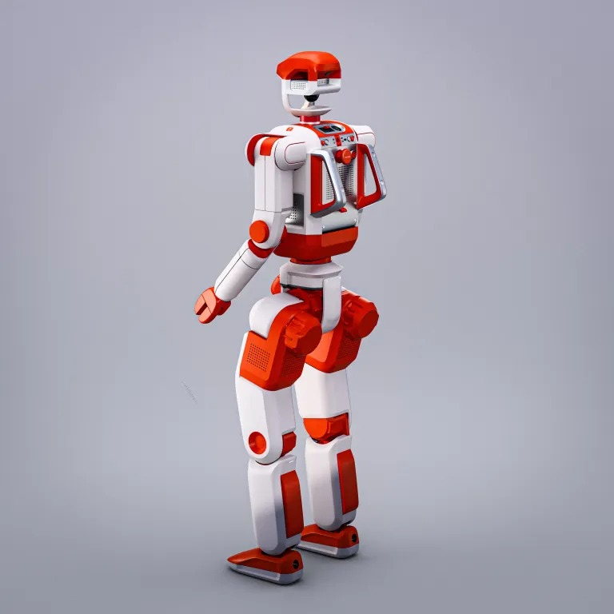

Amazon
Texas, US · Hybrid
Aug 2026 — present
Student Researcher
Amazon · in affiliation with UWaterloo
Foundational models for last-mile delivery. Incoming Fall 2027.
Teaching robots to perceive, reason, and act in the real world.
Mechatronics Engineering + AI at the University of Waterloo, working on foundational models and robot learning for manipulation. Currently a Research Engineer at AXIBO under Vidyasagar Rajendran, and an accelerated MASc researcher in robotics at Waterloo under Stephen L. Smith.
Amazon
Texas, US · Hybrid
Aug 2026 — present
Student Researcher
Amazon · in affiliation with UWaterloo
Foundational models for last-mile delivery. Incoming Fall 2027.
AXIBO
Cambridge, ON · On-site
Apr 2026 — present
Research Engineer
AXIBO · Internship
Foundational models for humanoid manipulation. See §Research and §Preprints for the work under this role.
University of Waterloo
Waterloo, ON · On-site
Jan 2026 — Apr 2026
Student Researcher
University of Waterloo · CL2 Lab
Reinforcement learning for autonomous racing, under Prof. Yash Vardhan Pant.
Syncere
Palo Alto, CA · On-site
Dec 2025 — Feb 2026
Robotics Engineer
Syncere · Internship
Teleoperation and imitation learning for laundry-folding robotic lamps.
WATonomous
Waterloo, ON · Remote
Jan 2025 — Nov 2025
Robotics Engineer
WATonomous · University of Waterloo
Reinforcement learning for dexterous manipulation, evaluated in Isaac Lab with sim-to-real transfer.
NETINT Technologies
Vancouver, BC · On-site
Jan 2025 — May 2025
Software Engineer
NETINT Technologies · Internship
Computer vision for visual corruption detection in video streams, and real-time generative video streaming.
Three tracks from my work at AXIBO. Each pairs a published method with a concrete engineering problem on a real robot; the figures redraw the deployed architecture.
Role
End-to-end ownership: demo-collection hardware → policy training → closed-loop deployment on Junior's dual arms.

A single fixed action-chunk horizon trades foresight for precision, yet bimanual tasks need both. Camera, inference, and control delays misalign predicted actions with physical execution, and per-chunk inference alone caps effective control frequency on contact-rich tasks. Junior's deployed stack composes four ideas so each addresses a different failure mode: a π0.5 flow-matching backbone, a Mixture of Horizons action head with a learnable gate, inference-time latency matching adapted from UMI, and action interpolation between predicted chunks drawn from the 2025 BEHAVIOR Challenge-winning solution.
Mixture of Horizons resolves the foresight / precision trade-off of a single fixed horizon; latency matching keeps predicted actions temporally aligned with execution; and action interpolation raises the effective control frequency between chunk predictions without extra inference calls. The components compound rather than compete, yielding improved throughput, accuracy, and precision over a single-horizon, latency-naive baseline.
Basis
DSRL — Steering Your Diffusion Policy with Latent Space Reinforcement Learning, Wagenmaker et al., CoRL 2025.
Fine-tuning a diffusion or flow policy's weights with RL is unstable and demands full access to model internals, while behavior-cloned policies plateau without costly additional demonstrations. DSRL sidesteps both: instead of updating weights, it trains a small RL agent to select the noise seed that initializes denoising, steering a frozen, black-box base policy toward better behavior.
I applied DSRL-style noise-space RL to our deployed VLA policy's action head, training a lightweight SAC agent (~500K parameters) to pick the seed that steers the frozen base policy. Because RL runs over the latent-noise space — never through the denoiser — no gradients touch the base weights and no model internals are required. This post-training contributed to a 30% manipulation-performance gain over imitation baselines, adapting a frozen policy without modifying its weights or collecting extra demonstrations.
Basis
VLA-JEPA — Enhancing Vision-Language-Action Models with a Latent World Model, Sun et al., 2026.
Standard VLA policies map observations directly to actions without modeling how the scene will evolve, and pixel-space prediction is brittle to appearance and camera changes. Following VLA-JEPA, I built action-conditioned latent world-action models that predict future latent states rather than pixels — a leakage-free formulation in which future frames are only ever targets, never inputs.
The model encodes the current observation plus action context into a latent representation and predicts 10-step, action-conditioned latent dynamics with no pixel reconstruction. A two-stage recipe — JEPA-style pretraining followed by action-head fine-tuning — integrates the predicted latent rollouts with downstream VLA action heads. I evaluated rollout consistency across manipulation trajectories to assess temporal coherence of the learned dynamics.
Ongoing research I'm actively developing. Each is a living document; the full write-up — figures, equations, tables, and references — is linked below.
Research proposal · study in progress
Does a diffusion-trained bidirectional multimodal backbone produce better action-token hidden states than a causal/autoregressive VLM backbone when both use the same flow-matching action expert?
A controlled study on the LIBERO benchmark that isolates the backbone as the only variable — swapping Dream-7B (discrete-diffusion) for Qwen2.5-7B, its own autoregressive base, under one shared flow-matching action expert. Because the two backbones share initialization and architecture and differ chiefly in training objective, the C−D contrast identifies the effect of the diffusion pretraining prior rather than scale or data. Beyond rollout success, I probe the action-token hidden states directly against simulator ground truth to test whether the diffusion prior organizes trajectory phase, contact timing, and subtask ordering better.
Research proposal · IROS 2026 Robotic Origami Challenge
On a 65-DoF bimanual dexterous platform with rich tactile sensing, does augmenting a flow-matching VLA with a Mixture-of-Horizons reactive head and progressive tactile fusion improve autonomous paper folding over a vision-only policy?
A π0.5 flow policy made reactive — multi-horizon action prediction with disagreement-based replanning — and contact-aware through progressive tactile fusion, escalating from proprioceptive concatenation to a force-aware mixture-of-experts action decoder. Trained as a single vision-conditioned policy over a fixed six-fold sequence across 143 tactile-rich sessions, with a staged Phase 0–4 plan whose go/no-go criteria isolate the value of tactile sensing before the most invasive fusion is built, plus the systems work to fine-tune a 65-DoF policy from a 32-DoF base in OpenPI.
Notes on papers I've been reading in robot learning — my read on what's interesting, what's limited, and where it points next. Each links the paper it's about.
Definitely worth a read if you're interested in foundational models for robotics and the direction the field is going in — pretraining on video to imagine how the world evolves, then fine-tuning that same backbone to act. It's the throughline behind a lot of what I'm working on right now.
I've been digging into video-based humanoid control, and this paper really stood out. The pipeline is surprisingly clean:
From a single monocular video, the system jointly reconstructs metric-scale human motion and scene geometry, retargets it to a humanoid, and trains a policy to track those trajectories under physical constraints. What I like is how cleanly the roles separate:
It effectively turns passive video into a structured control signal, without relying on teleoperation or motion capture. The limitation is that it's still fundamentally trajectory-tracking: it inherits biases from reconstruction and has no explicit mechanism for reasoning about alternative futures or task objectives.
That raises a more interesting direction — what happens if we replace trajectory tracking with a learned world model?
That would decouple perception (what is happening), prediction (what will happen), and control (what to do). I'm exploring a small version of this pipeline, starting from extracting motion priors from video and training a policy in simulation.
I've been diving into real-time execution for VLA models, and RTC stood out. The core idea is simple: instead of predicting actions, executing them, and then pausing to think again, RTC predicts the next action chunk while the robot is still moving.
By overlapping chunks and using a "freeze + inpaint" strategy, part of the trajectory is treated as fixed while the rest is generated — effectively turning the problem into constrained sequence prediction. This removes the latency bottleneck and shifts VLA policies from batch-style inference toward streaming control, much closer to how real robots actually operate.
One interesting limitation: overlapping actions are frozen, so the system can't correct mistakes mid-chunk — it can only adapt going forward. That raises a deeper question about how much of the future a robot should commit to at any given moment. It feels like an important step toward making generalist policies actually deployable, and I'd love to explore combining it with residual RL or adaptive horizons for something even more reactive.
One of the biggest weaknesses of VLA models is long-horizon reasoning. Most VLA policies predict actions from the current observation alone:
This works surprisingly well for short manipulation tasks. But once the robot executes 20–100 steps, small errors compound and the policy drifts off distribution. TraceVLA asks a simple question: what if we gave the robot an explicit visual memory of its past trajectory? Instead of only the current frame, it provides two visual inputs — the current observation, and the same image with trajectory traces overlaid — encoding the robot's past state-action history directly in the visual domain. The pipeline:
This effectively converts temporal information into spatial structure, which transformers reason over much better. The result: +10% over OpenVLA in simulation, 3.5× higher success on real-robot tasks, and strong generalization across embodiments.
The broader insight is what I find interesting: instead of scaling context windows or storing long histories, this compresses trajectory memory into a spatial representation — the robot doesn't need to remember the whole action sequence because it just sees the path it took. That feels especially relevant for long-horizon tasks like cloth folding, object rearrangement, multi-step assembly, and tool use. I ran into similar long-horizon issues working with policies trained from teleoperation data, so seeing this was exciting — a step toward giving VLA systems a more explicit notion of spatial-temporal memory.
A lot of robotics failures don't come from predicting the wrong action. They come from contacts, friction, and object dynamics making the control problem messy. Residual RL proposes a simple but useful hybrid: use classical control for what it's good at, and reinforcement learning for the leftover complexity. The reward decomposes as:
The key idea is an additive control policy:
Instead of learning a controller from scratch, RL only learns the residual correction. Evaluated on a real-world task — inserting a block between two standing blocks without tipping them over — the results are striking: residual RL learns faster and performs better than RL alone in both sim and reality; on misaligned starts the hand-designed controller succeeds 2/20 while residual RL succeeds 15/20; it learns subtle corrections (nudging blocks into alignment) in ~8,000 samples (~3 hours of real interaction); and initialized from MuJoCo, it solves the task in under 1,000 real-world timesteps.
My takeaway: structure from classical control plus adaptability from RL is a very clean way to tackle contact-rich manipulation — let RL focus on the parts that are hardest to model, instead of rediscovering everything. I keep thinking about this in modern VLA systems: should robustness come from residual policies, or from fine-tuning the full foundation model?
One of the biggest weaknesses of imitation-trained VLA models is distribution shift during rollout. Behavior cloning optimizes action prediction on expert states, but once deployed the robot visits states induced by its own policy — and small prediction errors compound quickly. (As I was preparing for my role at AXIBO, I started digging deeper into VLA systems: action heads, value integration, online adaptation, embodiment constraints.) ConRFT proposes a two-stage reinforced fine-tuning pipeline aimed at exactly this problem.
Stage 1 — Cal-ConRFT (offline). Calibrated Q-learning for conservative value estimates, augmented with a behavior-cloning loss under a unified objective:
Trained on only 20–30 demonstrations, so the BC term is needed to stabilize — the hybrid objective improves expected return while staying close to demonstrated behavior.
Stage 2 — HIL-ConRFT (online). Same unified loss, symmetric sampling from demo and replay buffers, and human-in-the-loop interventions for safe exploration, gradually shifting weight from BC (β) toward Q-learning (η). One detail I liked: instead of a diffusion action head, ConRFT uses a lightweight consistency policy head (diffusion horizon discretized into M = 40 steps, a 2-layer MLP) — efficient inference with value-guided refinement.
Across 8 real-world tasks it reaches 96.3% average success within 45–90 minutes of online training — a 144% improvement over the supervised baseline with 1.9× shorter episodes (the baseline reached only 31.9% in the same budget). The takeaway: imitation provides a strong prior, but without value-based refinement, policies struggle under their own induced state distribution. ConRFT reframes VLA fine-tuning as consistency-based policy learning guided by Q-estimates and stabilized by behavior cloning.